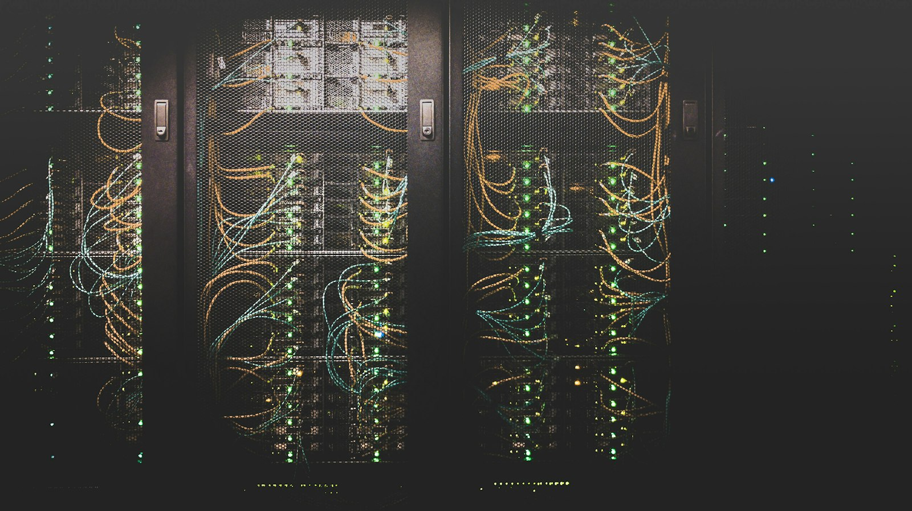

Sept leçons apprises à nos dépens pour ingérer des centaines de To avec presque zéro maintenance. Il a fallu deux ans pour en arriver là.
Par Alexis Blandin · 5 min de lecture
Je n'aime pas partager des retours d'expérience sur des logiciels précis : ces articles vieillissent mal. Mais sur AWS DMS vers S3, nous avons assez souffert chez Jolimoi pour que garder ça pour nous soit criminel.
Avertissement : ce qui suit ne vaut que dans notre contexte. Le circuit est décrit ci-dessous.
De la source jusqu'aux fichiers, chaque leçon a son endroit dans le circuit.
YYYYMMDD, point. Pas de complexité inutile. Ça marche pour nous parce qu'on ne fait pas de query pruning directement sur S3 : tout est ingéré par Autoloader vers Delta Lake. Le vrai bénéfice : les backfills et les migrations deviennent triviaux. Adaptez à votre volume et à vos patterns d'accès, mais commencez simple.AR_H_CHANGE_SEQ pour MySQL), l'Op (INSERT, UPDATE, DELETE) et le TIMESTAMP. DMS peut tronquer la précision à la milliseconde. Sans ces colonnes, impossible d'ordonner de façon fiable des opérations concurrentes. Ça ressemble à un détail, jusqu'au jour où ça casse vos garanties de cohérence.Deux leçons méritent un dessin. La cinquième d'abord : quand deux opérations tombent dans la même milliseconde, seul l'identifiant de transaction dit laquelle est arrivée en premier.
| AR_H_CHANGE_SEQ | Op | TIMESTAMP | status |
|---|---|---|---|
| …0000000000418230 | I | 2025-12-15 09:14:03.217 | created |
| …0000000000418231 | U | 2025-12-15 09:14:03.482 | paid |
| …0000000000418232 | U | 2025-12-15 09:14:03.482 | cancelled |
La sixième ensuite : l'instance DMS n'a pas besoin de la même taille toute sa vie.
Pas une solution « configurer et oublier ».Deux ans pour en arriver là.
AWS DMS vers S3 demande du soin. La différence se joue sur la granularité des tâches, limitée aux tables isolées, sur des métadonnées de transaction complètes, sur un dimensionnement intelligent et sur une vraie obsession des détails opérationnels.
L'architecture en aval compte autant que DMS. Nous ne requêtons jamais directement sur S3 : tout passe par Autoloader vers Delta Lake, puis par dbt. Le Parquet sur S3 n'est qu'un tampon d'ingestion.
Les erreurs DMS sont captées et remontent dans Slack par un agent maison. Le seul bug vraiment vicieux rencontré : un ALTER TYPE sur un ENUM MySQL, qui a mélangé les valeurs. Détecté vite, corrigé, puis full load à nouveau.
Aujourd'hui, nous ingérons des centaines de To avec presque zéro maintenance. Il a fallu deux ans pour en arriver là. Adaptez à votre contexte, ne copiez pas aveuglément.